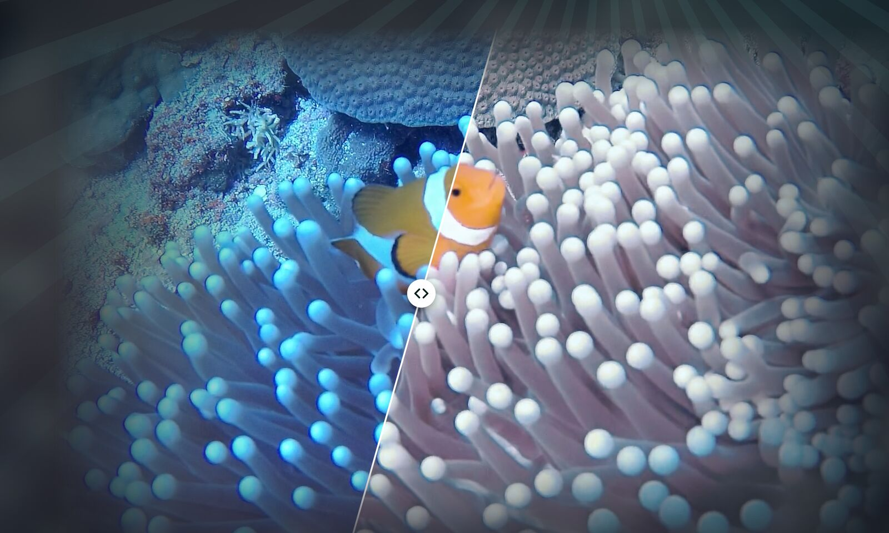
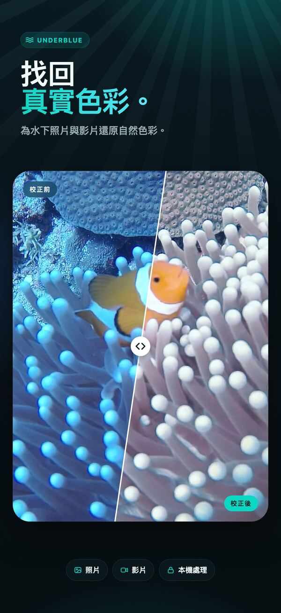
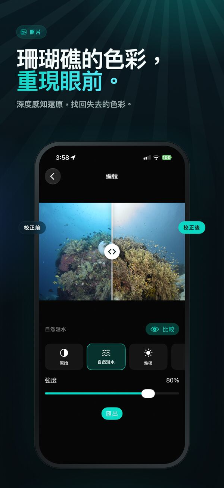
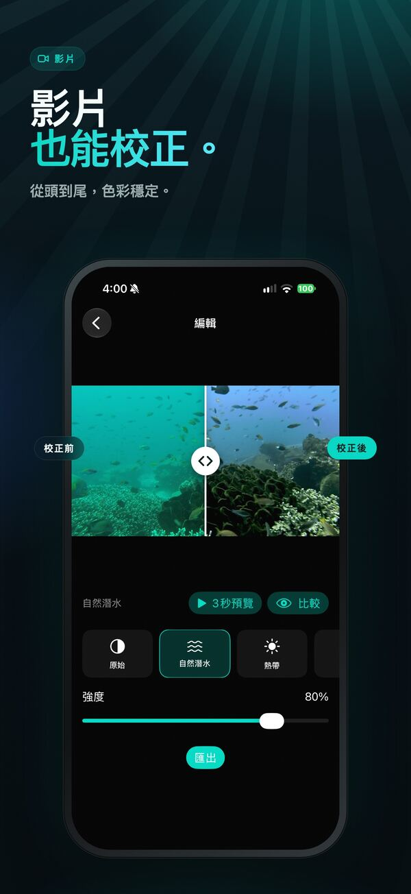
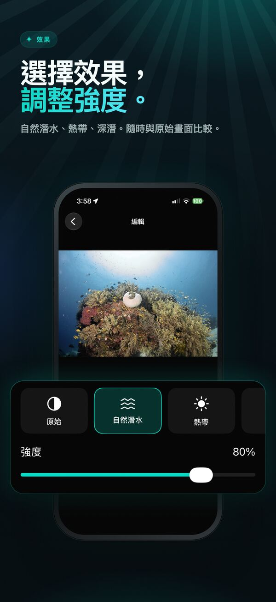
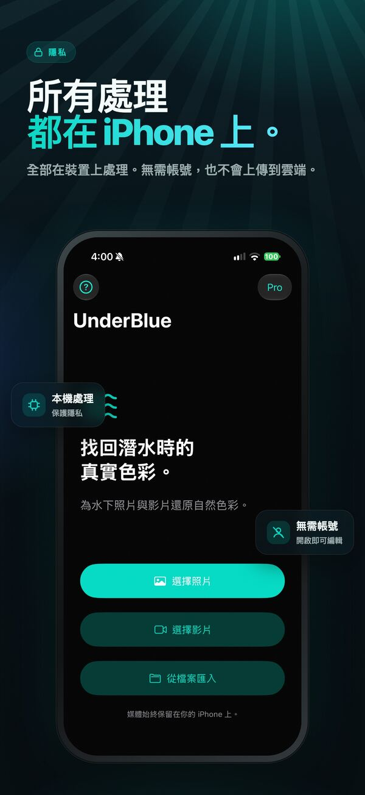
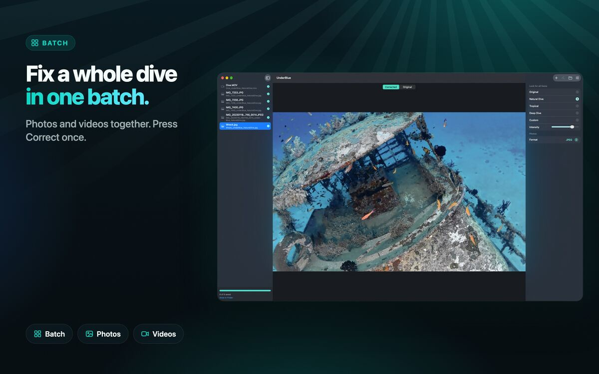

還原水下照片與影片的色彩
在 iPhone 本機完成、保護隱私的深度感知還原，為水下照片與影片找回自然的色彩與清晰度。

UnderBlue 為水下照片與影片還原自然的色彩與清晰度。
匯入照片或影片，選擇效果，然後與原始畫面比較。你可以調整效果的強度，也可以在「自訂」中自行設定亮度、對比度、飽和度、清晰度和色溫。UnderBlue 採用深度感知的水下還原技術，減少色彩衰減和懸浮物造成的白色霧感（後向散射），同時保持畫面自然，影片色彩也穩定。





主要功能
- 自然潛水、熱帶、深潛三種效果
- 具備 5 個調整滑桿的「自訂」
- 深度感知的照片與影片還原
- 每一格畫面色彩穩定的影片校正
- 原始解析度與 4K 影片匯出（UnderBlue Pro）
- SDR 及支援的 HLG/PQ HDR 影片輸出
- 含增益圖的 HDR 照片匯出（UnderBlue Pro）
- 從「照片」App、「檔案」App（包含相機 RAW）和分享表單匯入
- 保留原始影格速率、時序、方向和音訊
- 完全在裝置上處理，無需帳號，也不上傳到雲端
免費試用
可免費匯出 1 張照片，以及 1 部影片的前 10 秒。UnderBlue Pro 為一次性購買。購買後可無限匯出照片（每次最多 10 張），並可匯出完整影片和 4K 影片，在支援的環境下還可匯出 HDR。

UnderBlue 專為記錄休閒潛水回憶而設計，不是科學測色工具，也不是專業調色工具。
Mac 版 — 即將推出
在 Mac 上一次批次校正整趟潛水的照片與影片。
